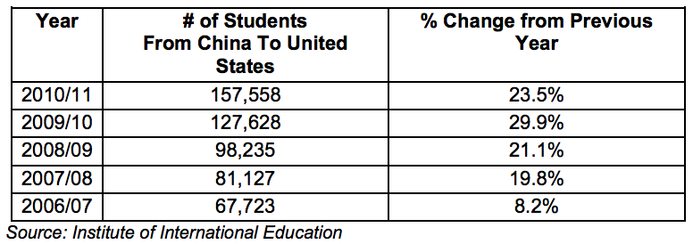

Return to top
U.S. colleges and universities remain the preferred overseas destination for students from China, which remains the leading source of foreign students in the United States. Short-term training programs, technical schools and workshops in specialized fields as well as business education are particularly sought after. In December 2011, China's National Development and Reform Commission (NDRC) along with the Ministry of Commerce (MOFCOM) jointly released a revised edition of the Guiding Catalogue on Foreign Investment in Industry, replacing the 2007 edition. The 2011 revised Catalogue adds "training and vocational education" to the so-called "encouraged" list of industries for foreign direct investment. (The Catalogue includes four categories: "encouraged," "restricted," "prohibited" and "permitted".) U.S. educational organizations can also sell teaching materials and equipment, convey the latest methodologies and case studies, exchange faculty, and provide educational consulting services.
Return to top
In the 2010/11 academic year, nearly 158,000 Chinese students travelled to the United States to study. That constitutes a 23.5 percent increase from the previous academic year in the number of Chinese students going to the United States. Still, this increase is a deceleration from the nearly 30 percent rate of growth experienced the year before.

There is no doubt that the desire by Chinese students to enroll in U.S. institutions is high, fueled by increasing disposable incomes. Although the majority of Chinese students are still pursuing degrees in business, engineering and sciences, there appears to be an increase in demand for vocational classes and utilization of community colleges to upgrade skills to increase earning potential as well. This matches the recent move by the Chinese Government to encourage foreign direct investment in vocational education and training.
U.S. institutions should remain active in the promotion of American education in China, as competition for Chinese students from other English-speaking countries increases and as the expansion of the domestic education market in China creates an increasing number of opportunities for students to pursue higher education without leaving China. Thus, university admissions officers should be aware of and counsel prospective students on visa procedures affecting travel to the United States.
A common approach used by U.S. schools to recruit Chinese students is through local education agents. Over one thousand education agents are estimated to exist in China, with about 300 of them having obtained proper licensing from the Ministry of Education (down from around 400 the year before). U.S. schools are encouraged to vet education agents carefully before engaging their services. Bear in mind that the industry lacks sufficient oversight and that complaints about education agents are common. The Commercial Section of the U.S. Embassy and U.S. Consulates can offer guidance regarding how to use reputable, licensed education agents.
The U.S. footprint in China for educational services is dominated by U.S. universities, but other forms of training also do well, particularly management and English language training. Most local firms actively outsource these training needs. As a result, one can easily find courses throughout the country on leadership, team building, and people management. English language schools are also prevalent and proving to be a lucrative business. However, entering this market is quite costly, and a local presence is a must.
In addition, the market has a preference for instructors with Chinese language capabilities.
Return to top
China International Education Exhibition (CIEET) Tour 2012
Date: March 10-25
Website: http://www.cieet.com/en/index.asp
China Education Expo 2012
Date: October (Date TBD)
Website: http://www.chinaeducationexpo.com/
Ministry Of Education
Department of International Cooperation and Exchanges
37, Damucang Hutong
Xidan, Beijng 100816, China
Tel: (86 10) 6609-6275
Fax: (86 10) 6601-3647
Website: http://www.moe.gov.cn/publicfiles/business/htmlfiles/moe/moe_2792/index.html
Beijing
Maggie Qiu, Commercial Specialist
U.S. Embassy, Commercial Section
55 An Jia Lou Road
Beijing 100600, China
Tel: (86 10) 8531-4157
Fax: (86 10) 8531-3949
Email: jing.qiu@trade.gov
Shanghai
Wenjuan Zhan, Commercial Specialist
Foreign Commercial Service
U.S. Consulate General in Shanghai
Tel: (86 21) 6279-8958
Fax: (86 21) 6279-7639
Email: wenjuan.zhan@trade.gov
Guangzhou
Eileen Bai, Commercial Specialist
Foreign Commercial Service
U.S. Consulate General Guangzhou
14/F China Hotel Office Tower
Guangzhou 510015, China
Tel: (86 20) 8667-4011 ext. 628
Fax: (86 20) 8666-6409
Email: eileen.bai@trade.gov
Chengdu
Lily Lin, Commercial Specialist
U.S. Commercial Service
American Consulate General
No. 4 Lingshiguan Lu, Chengdu 610041, China
Tel: (86 28) 8558-3992 ext.6633
Fax: (86 28) 8558-9221
E-mail: Lin.Liping@trade.gov
Shenyang
Liu Yang, Commercial Specialist
U.S. Commercial Service
U.S. Consulate General Shenyang
52 Shi Si Wei Road, Heping District
Shenyang 110003, China
Tel: (86 24) 2322-1198 ext. 8143
Fax: (86 24) 2322-2206
Email: Yang.Liu@trade.gov